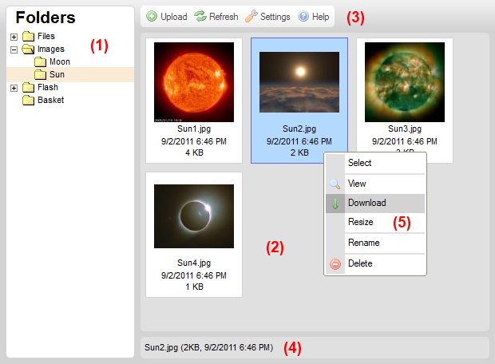

Tổng quan
Được thiết kế đơn giản mà tiện dụng, có hỗ trợ menu chuột phải.
Giao diện quản lý file như trên máy tính nên quản lý trực quan và dễ dàng.
Một số hình ảnh giao diện:

- Thư mục – Chứa danh sách thư mục dạng cây, bạn có thể tạo theo ý mình
.
- File – thể hiện danh sách các file có trong thư mục đã chọn.
- Thanh công cụ – các nút bấm thiết kế để sử dụng nhanh các chức năng.
- Status Bar – Hiển thị thông tin về file đã chọn,..
- Context Menu –Là dạng menu chuột phải để thao tác trên một file cho tiện lợi.